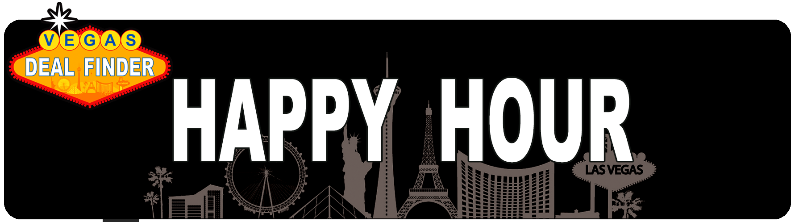

<template>

  <div class="MainContainer single-wide">
    <div class="TitleImg center">
      
    </div>
    <h1>Best Happy Hour Deals near Fremont Street </h1>
    <div class="imgdiv">
      
    </div>
    <p><em>Fremont Street</em> is located in historic downtown Las Vegas just fifteen minutes from the Strip.  Famously known as the Fremont Street Experience, the five-block downtown area is packed with free, live entertainment nightly. The outdoor Fremont street mall provides walking access to all the downtown casinos and is covered by the world’s largest video screen, Viva Vision, towering 1,500 feet along the pedestrian mall.  The light shows start every night at sunset and runs hourly until midnight.  This is the best place to win money, while participating in the Fabulous Fremont Street Coupon Run. </p>
    <h2>THE BEST HAPPY HOURS IN DOWNTOWN LAS VEGAS </h2>

    <div class="hottip moving-border">
      <div class="flex">
        
        <h4>1. TRIPLE 7 RESTAURANT & MICROBREWERY AT MAIN STREET STATION </h4>
      </div>
      <div class="flex">
        <p>Snacks, cocktails, and beer: It’s the perfect trifecta, and they’re available from 3:00 p.m. to 6:00 p.m. and from 11:00 p.m. to 3:00 a.m. during weekdays at Triple 7 Restaurant & Microbrewery. You can enjoy $2 draft beers and appetizers as low as $3 each during happy hour. We’re talking about oysters, stuffed jalapenos, BBQ pork sliders and Triple 7 wings!  This is a VDF Best Bet !! </p>
        
      </div>
    </div>
    <hr/>

    <h4>2. Red Sushi at Golden Nugget </h4>
    <p>If you’re in the mood for fresh sushi and sake, then Red Sushi at the Golden Nugget is just the place for you. They offer one of the most robust menus with appetizers, sushi rolls and specialty cocktails during happy hour that will keep your taste buds and your wallet happy. Happy hour at Red Sushi, or “Saketini Time” as they refer to it, runs from 4:00 p.m. to 6:00 p.m. daily. </p>
    <div class="imgdiv">
      
    </div>

    <h4>3. CADILLAC MEXICAN KITCHEN & TEQUILA BAR AT GOLDEN NUGGET </h4>
    <p>Craving tacos, nachos and a cold beer? Of course you are. Head over to the Cadillac Mexican Kitchen & Tequila Bar at the Golden Nugget, which has one of the best happy hours you’ll find in all of Sin City. You can snag $5 margaritas, $5 well spirits, $4 domestic draft beers and all your south-of-the-border favorites like nachos, quesadillas and street tacos at super discounted prices. Happy hour runs Monday through Friday from 4:00 p.m. to 7:00 p.m. </p>
    <div class="imgdiv">
      
    </div>

    <h4>4. Banger Brewing </h4>
    <p class="abrwidth">Banger Brewing in downtown Las Vegas offers $5 house drafts during happy hour, which is from 1:00 p.m. to 3:00 p.m., and 9:00 p.m. to 11:00 p.m., daily. With discounted prices and an extensive beer selection, happy hour at this place will make any craft beer lover happy. Check their website for their rotating list of house drafts, which includes beers brewed in-house, as well as guest beers from craft breweries around the country. </p>
    <div class="imgdiv">
      
    </div>

    <h4>5. Downtown Cocktail Room </h4>
    <p>At Downtown Cocktail Room, the name says it all. It’s another fantastic place to check out in downtown Las Vegas during happy hour, or as they like to call it: “Halfy hour.” Why? Because from 4:00 p.m. to 7:00 p.m., Monday to Saturday, Downtown Cocktail Room takes 50% off everything on the menu. That’s a good time waiting to happen! </p>
    <div class="imgdiv">
      
    </div>

    <h4>6. Bin 702 </h4>
    <p>Happy hour is from 3:00 pm to 6:00 pm at Bin 702, located in Container Park in downtown Las Vegas. They offer $5 draft beers, $6 wells and $7 wine, plus a few other cheap and tasty concoctions you’re sure to enjoy. </p>
    <div class="divimg">
      
    </div>

    <h4>7. Classic Jewel </h4>
    <p>Enjoy the classic Vegas vibe as you take a sip of your favorite cocktail at the Classic Jewel. Happy hour starts at 4:00 pm and ends at 7:00 pm, Thursday through Saturday, when you get beer for just $3 and cocktails for $5. On Wednesdays, happy hour starts at 8:30 p.m. and ends at 11:59 p.m., and all wine selections, bottles and by the glass, are at 20% off! </p>
    <div class="divimg">
      
    </div>

    <h4>8. Downtown Terrace </h4>
    <p>Featuring shareable dishes and a full cocktail menu, and also located in the Downtown Container Park, Downtown Terrace is a great place for happy hour. Indulge in bottomless drinks for only $16 from open to close daily (two-hour limit). Food also starts at $3 during Monday happy hour, which is from 3:00 p.m. up 6:00 p.m. </p>
    <div class="imgdiv">
      
    </div>

    <h4>9. Esther’s Kitchen </h4>
    <p>Esther’s Kitchen offers delicious Italian soul food located in the popular Arts District in downtown Las Vegas. For pasta lovers, your minds are about to be blown because this place offers a pasta happy hour every day from 5:00 p.m. to 7:00 p.m. and 9:00 p.m. to 11:00 p.m. If you buy an adult beverage, you can order any pasta dish at half off at the bar. Yes, please! </p>
    <div class="imgdiv">
      
    </div>

    <h4>10. Hop Nuts Brewing </h4>
    <p>Happy hour at Hop Nuts Brewing is affectionately referred to as “Hoppy Hour” and goes from 4:00 p.m. to 7:00 p.m. daily. During this time, you can get $4 pints of great craft beers and more. Take advantage of this deal in the Tap Room, featuring 20 beers on tap every day. </p>
    <div class="imgdiv">
      
    </div>
    <hr/>

    <p>Happy hour isn’t all that’s going on when you head downtown. From dancing dealers to free concerts to the <a href="https://vegasexperience.com/slotzilla-zip-line/">SlotZilla Zipline,</a> head down to Fremont Street in downtown Las Vegas and drink in all the excitement. </p>
  </div>
</template>
